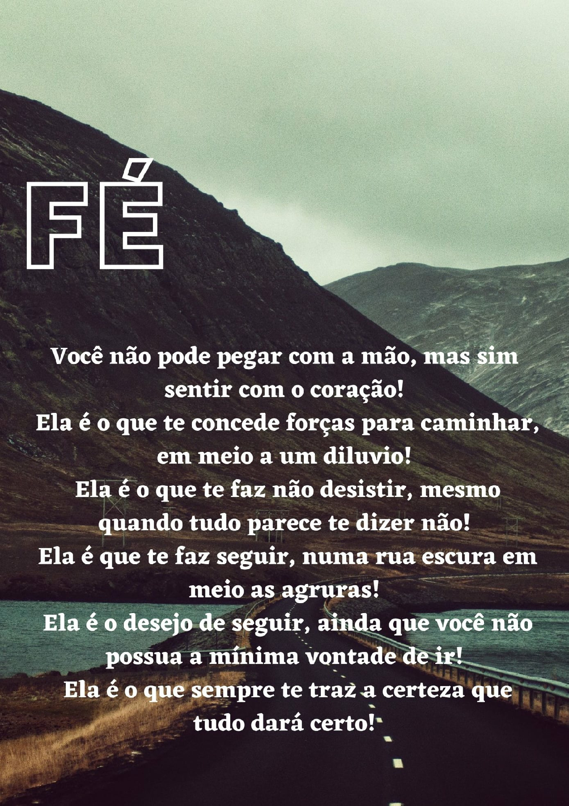
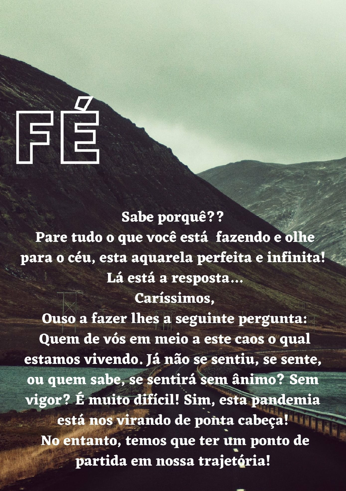
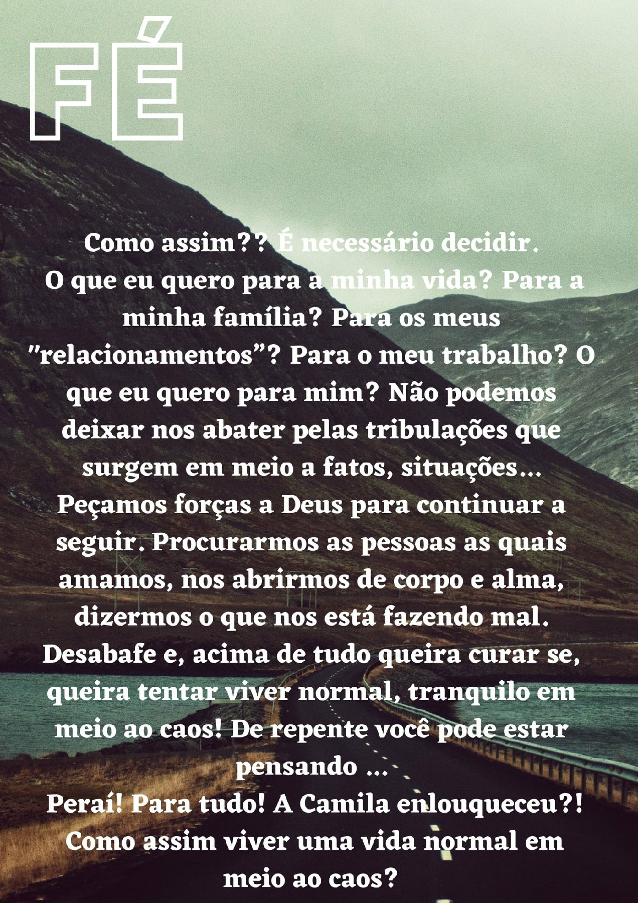
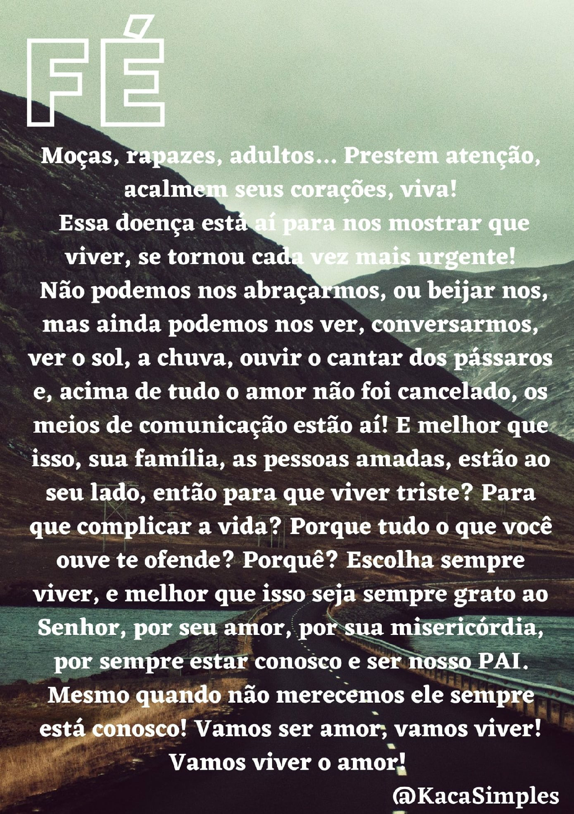
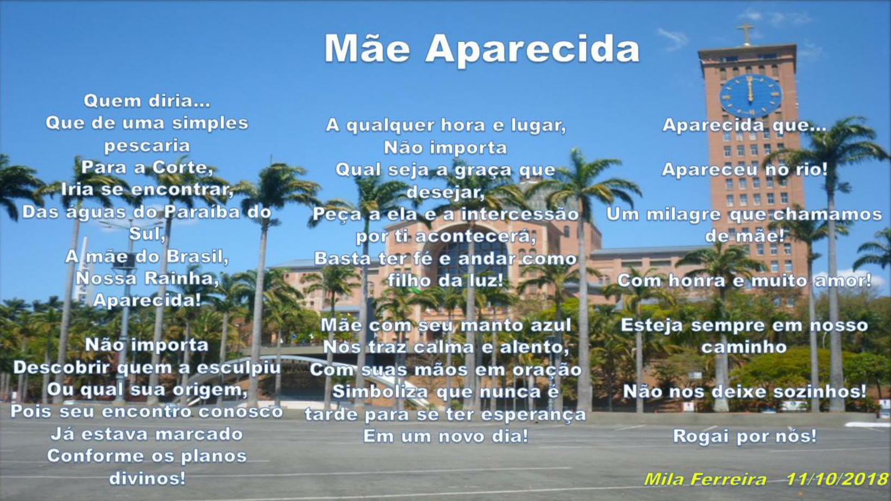
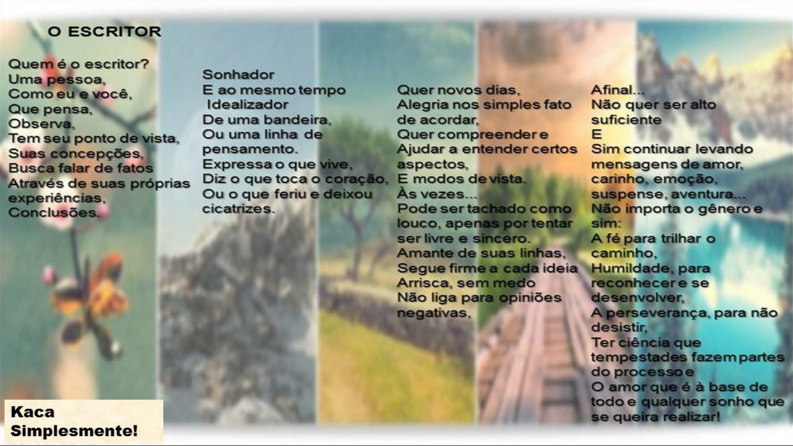

Kacá Simplesmente
 
 
Mãe Aparecida!
O escritor

A energia eólica,
Sem sombra de dúvida,
Todos sabemos,
É uma fonte de energia renovável,
Que não causa danos ao meio ambiente,
Energia limpa,
E graças a Deus temos vento de sobra!
Contudo não vim falar, sobre energia
E nem dar aula de Geografia...
E sim...
Falar sobre o cata-vento....
Cata-Vento...?
Pare o que está fazendo,
Feche os olhos e se veja
Como um cata-vento energético...
Você é uma torre e sua função é receber vento,
Girar com ele,
E através deste giro,
Você gera energia...
Mas, perceba que para seu giro ter sucesso o
vento tem de ser mais forte,
Pois o mesmo fraco não faz efeito algum.
O que eu quero dizer?
Meu caro, minha cara...
A vida é cercada de obstáculos,
E como na energia eólica,
Se quanto mais forte é o vento mais energia é gerada,
Pense comigo,
Quanto maior for a tribulação,
O desafio,
As dificuldades,
Para se realizar um sonho,
Um projeto,
Seja o que for,
Não pense em desistir!
Pois você saíra da mesma mais forte,
Mais convicto do que é
E do que deseja ser.
Aprenda a tirar sempre uma lição positiva das situações,
Mesmo que não transcorra como desejar,
Tudo servirá para edificação de seu ser!
E lembre-se de sempre acreditar em sua fé!
O Senhor estará eternamente conosco,
Portanto,
“Isto é uma ordem: sê firme e corajoso.
Não te atemorizes, não tenhas medo,
porque o Senhor está contigo em qualquer parte para onde fores.”
(Josué 1, 9)
E aí....
Vamos ser um catavento
Em meio a tantas modernidades,
A moda de ficar com um e outro em qualquer dia,
Numa geração onde as aparências importam,
A valorização está desaparecendo,
Ou tudo ou nada.
A brasa da paixão domina,
A fascinação de momento,
Para ali,
E depois é como se nada tivesse acontecido!
Como falar de amor...?!
Quem manda?
Será...
A excitação ou
O coração?
Uns vivem a carência,
Preferem uma companhia apenas para preencher um vazio,
Que tem de a ser completado por eles mesmos,
Pois nossa felicidade não se encontra no outro e sim transborda quando o encontramos!
Outros preferem o instante,
Um lance sem compromisso,
Acham que estão brincando com outrem,
E esquecem que também são de carne e osso!
O amor não exige idade,
Ou compatibilidade.
E sim maturidade,
Responsabilidade!
Não cative alguém que não tenha interesse,
Por mero capricho ou aposta,
Conquiste com o propósito de um compromisso,
Não banalize os tempos de namoro, noivado e matrimonio!
Não pule etapas,
Não hostilize a castidade,
Espere o tempo,
Não tenha pressa, não vivemos em competição!
O período de cada um é diferente,
E quando você decide esperar,
Não se argumente a cada melodia ou cena romântica,
Se prepare para o seu!
Reze por seu prometido(a),
Viva o quotidiano: família, igreja, trabalho, amigos, faculdade, etc...
E de repente no seu corre e corre,
A batida sente um despertar nunca sentido,
E derivará num sorriso ao seu prometido,
Que será reciproco!
Perene!
Viva ao amor,
Viva ao romantismo,
Companheirismo,
Que ele não se modernize,
E sim eternize!